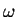

Next: Validation Reference in STRFPAK
Up: Validate
Previous: Validate
Contents
To quantify the goodness of fit of the estimated STRF, STRFPAK implements
two measures: the coherence and the correlation
coefficient. The coherence is a function of frequency and is given by:
Here and
are actual and predicted neuron responses
at each temporal frequency, . An overall goodness-of-fit estimate,  ,
is obtained by integrating the coherence function. can be thought of as the mutual information between the prediction and the response, and is often called info for short. The lower bound of is obtained if the noise follows a Gaussian distribution and the upper bound
is obtained if the neuron response is a Gaussian.
The correlation coefficient() between and
,
is obtained by integrating the coherence function. can be thought of as the mutual information between the prediction and the response, and is often called info for short. The lower bound of is obtained if the noise follows a Gaussian distribution and the upper bound
is obtained if the neuron response is a Gaussian.
The correlation coefficient() between and  is
calculated based on:
is
calculated based on:
Here and are actual and predicted neuron
responses. Since depends on the time bin that is used to
obtain from the PSTH, STRFPAK only
generates a between similar time windows.
When all calculations are done, a small ``Done Prediction''
window appears.
The details of how to measure the goodness of fit are beyond the scope of this manual. STRFPAK uses an unbiased measure of how well the prediction would match the true PSTH given infinite data size. To do this, STRFPAK compares how well one spike train is expected to fit the extrapolated infinite data PSTH versus how well one spike train is expected to fit the prediction. The first of these is the ``r'' displayed in the cc window, the second is the ``r predicted''. The ratio of ``r predicted'' to ``r'' is called the cc ratio. A perfectly linear neuron characterized perfectly by a STRF should have a cc ratio of 1.
The cc ratio will be a function of the smoothing window size. Depending on the researchers perspective, it may be most appropriate to look at the cc ratio of the cells at the smoothing window giving the maximum cc ratio, or it may be better to impose a fixed smoothing window length so that comparisons across many cells are more fair. STRFPAK calles the first
and the second
 . The built-in smoothing width used bt STRFPAK is 21 ms.
. The built-in smoothing width used bt STRFPAK is 21 ms.
Next: Validation Reference in STRFPAK
Up: Validate
Previous: Validate
Contents
2004-08-09